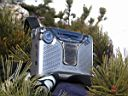
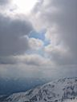
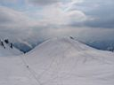
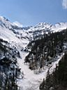

7, 8, 9 мая 2006. Закрытие сезона на Тальцинском
(часть 3)

...Уехал
ниже своих палаток, пришлось потопать вверх, но зато заценил снежные
камины иркутян. Все таки в большой снег лучше на бревнах костер разводить,
а не рыть ямы под два метра. Ужин Аня не варила, сама каталась да загорала
весь день. Заморив червячка рыбной консервой, греем воду, варим супчик,
ужинаем и перемещаемся к костру, пить чай, слушать рассказы и смешные
истории, в роли рассказчиков неплохо показывают себя Сергей и Рома,
походный панасоник играет 3 кассеты - сборники барды про горы, инструментал
и рэгги. У костра отдыхают Вова Язык и Дима Алексеев, подходили погреться
две иркутянки-лыжницы. Обсудив планы на завтра (немного покататься и
выходить), уже за полночь укладываемся по палаткам.
Дима Алексеев сегодня прыгал с камня, приземлился на ровное
место и чисто сломал доску почти пополам. Потом развернул крепления
и катался на ней аля-лыжник - тема для приколов и разговоров была обширная
и горячая!
Вторник 9.05.06

Утро
пасмурное, однако ветер гоняет облака, так что шанс на солнце остается.
А оно очень не помешает для размягчения склонов, иначе катание не получится.
Опять встал раньше всех, сварил чай. Подошли Аня и Сергей, доели вчерашнюю
гречку, попили чай. В принципе для катания время остается, выход назначен
с запасом времени, в 12:00. Пошли с Аней вверх, из улан-удэнцев следом
выдвигается Сергей, остальные не торопятся, они позже выходят к ночному
поезду. Иркутяне-норвежцы видимо вчера укатались, только Дима выходит
на лыже-борде, надо на камеру поработать, планируется замонтировать
прикольное видео.

Аня
решила катануть с Шаман-горы, а я топаю на перевал. Сергей догоняет,
вчера планировали спуск по кулуару в южном цирке, однако солнце только
что выглянуло и состояние склона в том кулуаре скорее всего очень жесткое.
Я решаю не рисковать и не тратить время, катануть с перевала, а Сергей
пойдет к южному кулуару, проверит снег, может и поедет там. Договорились
встретиться в июне в Ульзыхе, закрывать катальный сезон по-бурятски.
Стартую вниз по гребню, падаю с маленького карниза на
короткий, но крутой склончик, выкатываю на площадку под перевалом и
уже с нее хорошо разгоняюсь по ровному склону, пару-тройку огромный
дуг на огромной скорости, крутой склон резко выполаживается и перегрузка
буквально прижимает к земле, не удержался - пара кувырков и хороший
удар головой по твердому снегу. Блин, а мог бы красиво до Шаман-горы
доехать. Учиться, учиться и еще раз учиться кататься на крутых склонах.
Поднялся на Шаман-гору, ума пытать нефиг больше, склон оттаял, выбрал
свободные от расколбасов участки склона и удачно катанул до лагеря,
ловя фан между елок и березок. Кайфово, разошелся и опять ниже своей
палатки укатил :)
Поднимаюсь, народ иркутский уже сворачивается, пора и
нам собираться. Ани не видно, норвежцы ушли на выход, улан-удэнцы -
кататься. Поставил снег в кастрюлке кипятиться на остатках газа и начал
сворачивать палатку и собираться. Тут маза и кончилась - поднимается
прихрамывая Аня, вся в расстроенных чувствах, каталась и упала, повредила
ногу в голеностопе, пока снимала-одевала ботинок и осматривала ногу,
укатила по склону доска. Ладно, доску найти можно, а вот с ногой уже
дело серьезное, хорошо что не перелом. Быстро собираем вещи, отправляю
ее одну вниз по народной тропе, вроде ходит, до Танцплощадки дойдет,
а там будем стыковаться. Сам дособираю свои вещи и складываю палатку.
Подходит Вера, она решила выйти пораньше с нами и автостопом попасть
в Улан-Удэ к вечеру. Видела Аню, думает что дело серьезное, пошла ее
догонять.
Вера выкатывает до Бабы вдоль тропы, а я по ручью в поисках убежавшей
доски. Катуха отменная, правда рюкзак смещает центр тяжести и откровенно
мешается. Следы доски видны слабо, ну да никуда она из ручья не вытропит.
Так и есть - заехала слегка на склон, прыганула на кочке и воткнулась
без ущерба в снег. А снега в ручье много, наверное до самого низа, до
начала подъема доехать можно. Но наш путь обратно сегодня будет долог
- поднялся по-быстрому из ручья на Бабу (козырьки висят над полем в
полной готовности). Вера и Аня тут, делаем перевязку эластичным бинтом,
вроде ботинок оделся, можно двигать дальше. Девушки по тропе до Танцплощадки,
а я опять вниз по ручью, надо пробить трассу, дабы знать на будущее,
что при большом снеге проехать по ручью можно. Повезло, вполне прилично
скатился, вылез по раздолбанному лавиной склону на Танцплощадку. 5 минут
от Бабы плюс 15 минут карабканья вверх, жду своих, мимо иркутяне пробегают,
советую не тащить доски вниз, а катануть напоследок через лес до долины,
парни рискнули.

Ангарчане-лыжники
проехали по ручью дальше, на лыжах им до турбазы катить можно. Подошли
Вера и Аня, пробуем встегнуться и поехать вниз, у Ани не получается,
нога болит конкретно, сидя верхом на доске тоже некатуха. Кое-как спустились
вниз, через лес на доске с рюкзаком - так себе удовольствие. Посмотрел
как идет Аня и понял, что возвращение будет долгим. Ну и все, забрали
у "раненого бойца" вещи, отправили вперед, привязали рюкзак
к доске и потащились следом. Сначала я катил-тащил, потом Вера, но ее
тут же догнал иркутянин и забрал рюкзак, а она доску потащила, обогнали
нас на мостике через ручей. Аня таблеток обезболивающих выпила, идет
потихоньку, я следом. Доковыляли до турбазы, позвонив по дороге знакомому
таксисту в Байкальск, Аня с ним договорилась, скоро приедет. Вера ждала
на турбазе, переобулись, перекусили и маршрутка приехала, хоть что-то
радует.
Вера вышла на трассе, будет автостопить, меня довезли
до Ново-Снежной, Аня поехала в Байкальск. Вот такое печальное возвращение
получилось. Как выяснилось позже, улан-удэнцам тоже "повезло"
- Александру постигла та же участь при падении, однако травма ноги была
серьезнее, Сергей и Рома вывозили "раненую с поля боя" на
доске, в Выдрино делали ренген и гипс, уехали на утренней электричке.
Вот такой вот День Победы, две травмы на закрытии сезона.
А в остальном, без сомнений, катание на Тальцинском прошло успешно -
погода благоприятствовала, снега много, лавины еще спали. Народа катального
много меньше собралось, чем в прошлом году, но это на катании не сказывалось.
Лично я просек фишку катания с самого верха, думаю заняться этим серьезнее
в следующем сезоне, да и вообще
- FreeRaid Forever ! -
Май 2006. Белокрылов А.Ю. Слюдянка.